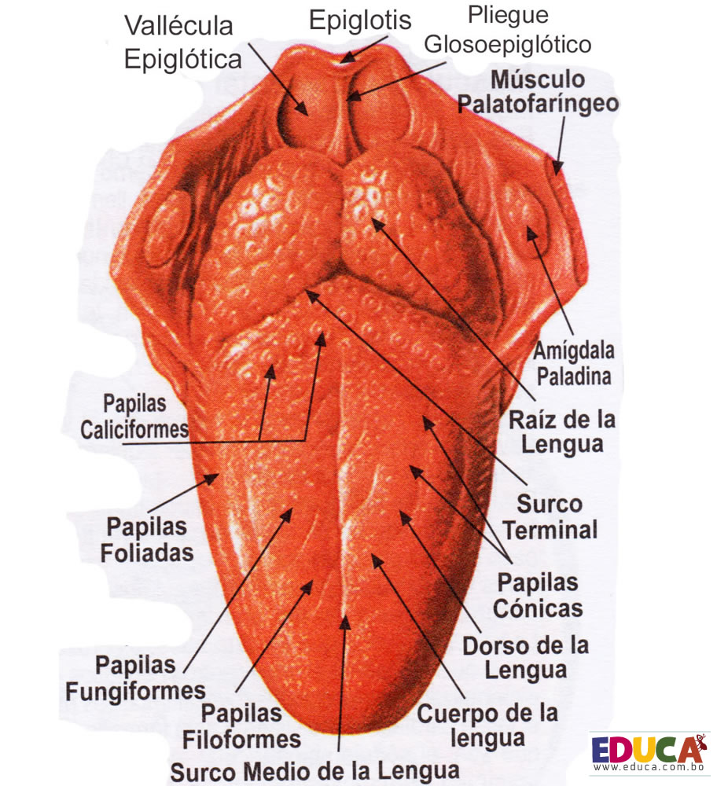

El sentido del gusto está en la lengua. Este sentido nos permite percibir el sabor de las cosas que comemos y probamos, pudiendo identificar si el sabor es dulce, salado, amargo o ácido. La combinación de estos cuatro sabores nos permite percibir otras combinaciones. La lengua es el órgano principal del sentido del gusto.
Para cuidar la lengua es importante mantener una buena higiene bucal.
